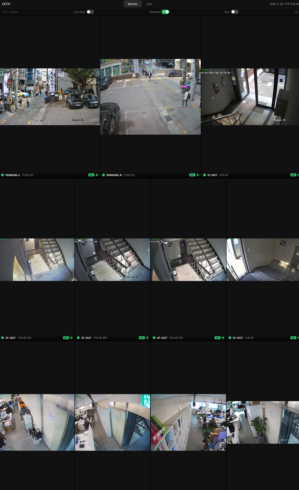
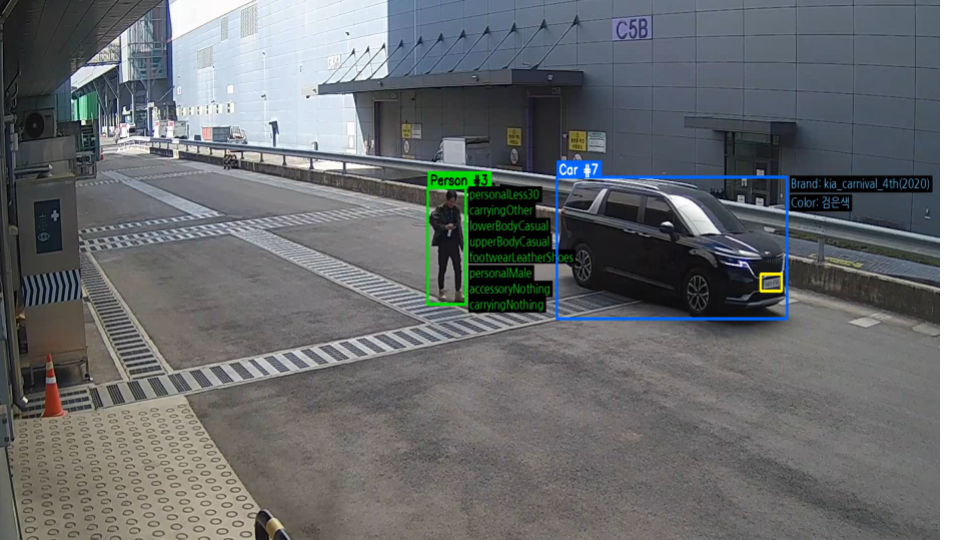
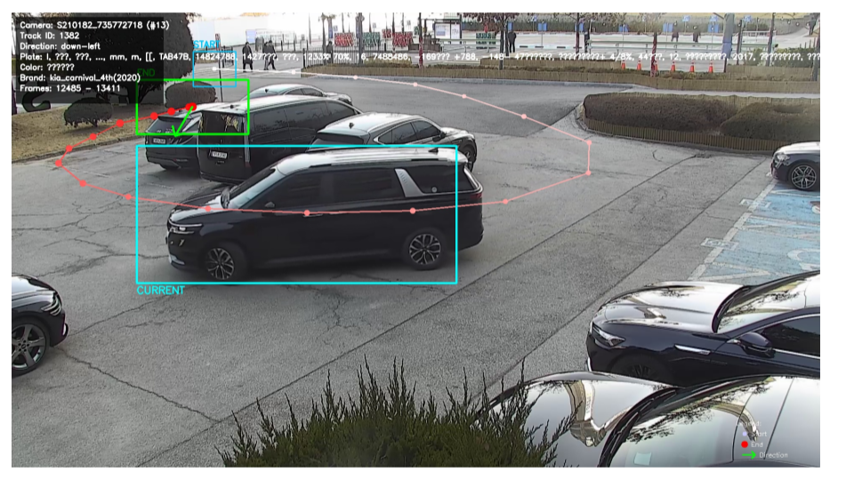
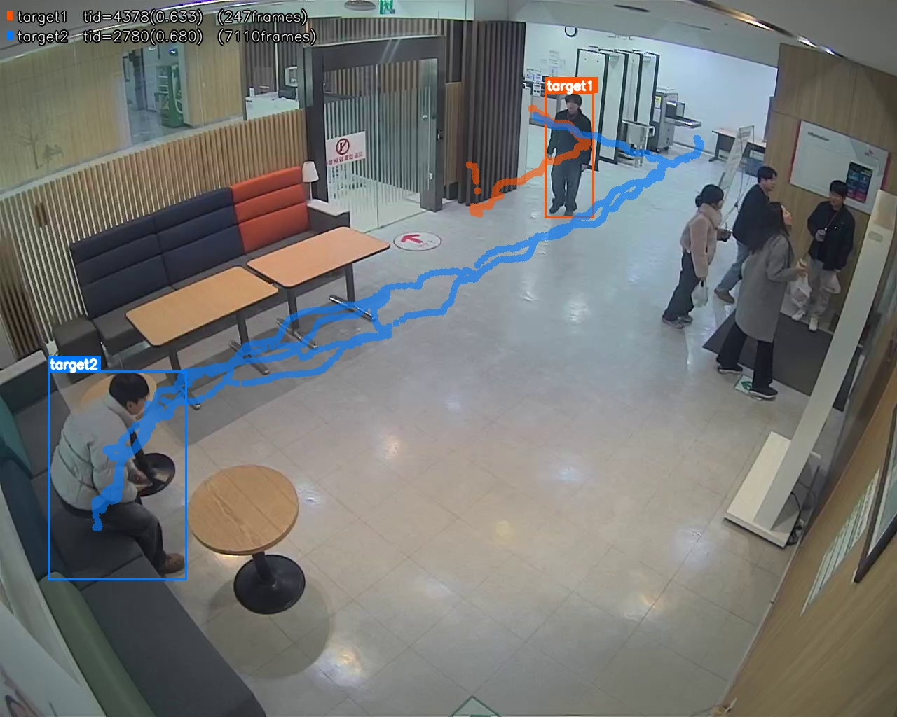
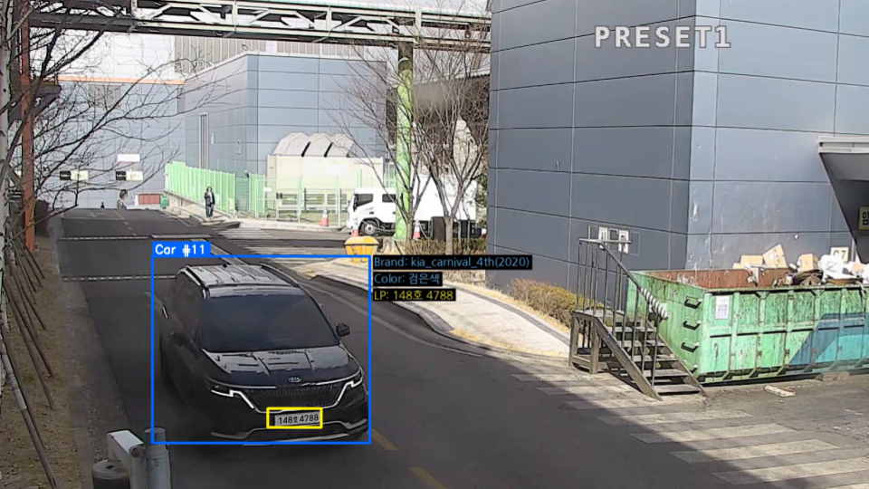
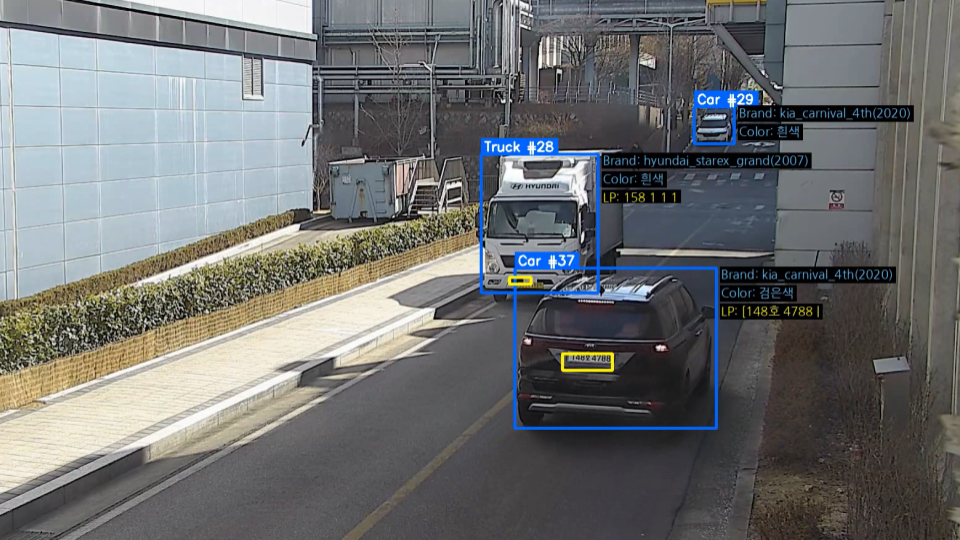
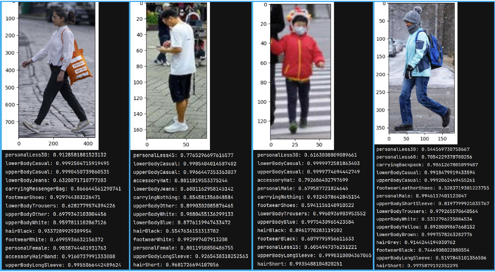
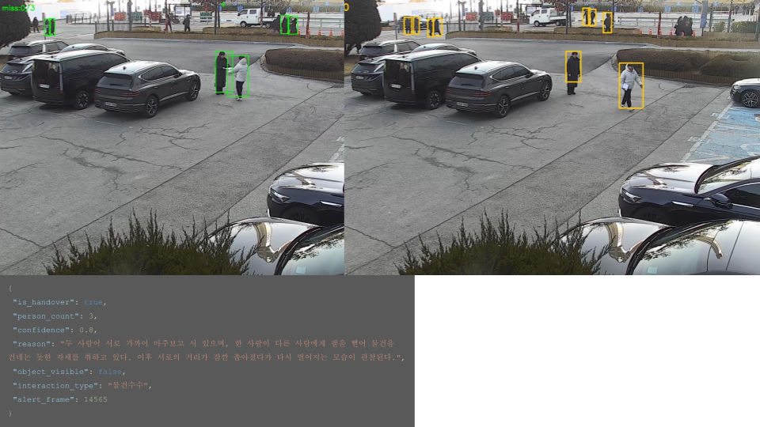
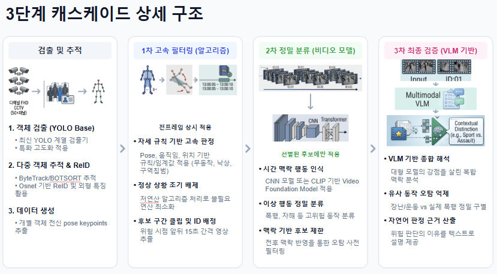

Smart Monitoring System (November 2025 ~ September 2026)
Sponsor: In-house R&D
Affiliated Institution: SECERN AI (AI Team 1)
This is an in-house R&D project to build an AI-based monitoring system that monitors situations
occurring at airports and public places, detects people and vehicles, recognizes their
attributes, and provides real-time information to the control center. The system integrates
multiple AI models for detection, recognition, and re-identification tasks to enhance
public safety and security.
Tech Stack: Huggingface, vLLM, PyTorch, OpenVINO, ONNX, Docker, Slurm, H100/A100 GPU
My Responsibilities:
- Data preprocessing pipeline and labeling system development
- Detection/Recognition model development
- VLM-based pseudo labeling and attribute recognition model development
- Model optimization (OpenVino, ONNX) and system integration


1. Vehicle/Person Detection & Tracking (+11~13% Improvement)
Challenge: Low detection rate in service environment due to domain gap
between training data and real-world deployment scenarios.
Solution: Implemented an iterative improvement pipeline - collected
undetected images from the service environment, labeled them, and performed additional
training to improve model performance. Vehicle and person detection and tracking run
simultaneously, using BoT-SORT as the multi-object tracking algorithm.
Results:
- Vehicle Detection: 95.8% accuracy (+13%)
- Person Detection: 95.2% accuracy (+11%)
- License Plate Detection: 94.5% accuracy

2. Person Re-Identification (+12% Improvement)
Challenge: Insufficient labeled data and severe class imbalance
in the person re-identification dataset.
Solution: Applied HDBSCAN unsupervised clustering algorithm to
generate pseudo labels from unlabeled data, and implemented Temperature-based Sampler
to address class imbalance during training.
Result: Achieved 88.7% accuracy for Person Re-ID (+12%).

3. Vehicle Brand/Color Recognition (New Development)
Challenge: No existing dataset available for Korean vehicle brands.
Joint training of brand and color recognition caused performance degradation.
Solution: Collected and curated custom dataset for Korean vehicles.
Utilized Vision Language Model (VLM) for automated pseudo labeling. Implemented
separate training pipelines for brand and color recognition to prevent interference.
Results:
- Vehicle Brand Recognition: 87.4% accuracy
- Vehicle Color Recognition: 85.2% accuracy

4. License Plate Detection & Recognition
Developed an OCR pipeline for Korean license plate Detection and recognition, consisting of
license plate detection, text detection and text recognition modules.
Result: Achieved 94.5% accuracy for License Plate Recognition.

5. Person Attribute Recognition
Developed a person attribute recognition model that recognizes detailed attributes
including upper body clothing, lower body clothing, shoes, accessories, and more.
Two approaches were built and compared: SOLIDER (a ViT-based model)
and PromptPAR (a Vision-Language model based on CLIP).
Results (overall):
| Model |
mA |
pos_recall |
neg_recall |
Acc |
Prec |
Rec |
F1 |
| SOLIDER (ViT-based) | 85.71% | 76.07% | 95.35% | 81.45% | 88.94% | 89.28% | 89.11% |
| PromptPAR (CLIP-based) | 84.04% | 74.45% | 93.63% | 62.96% | 71.36% | 83.95% | 75.08% |
Metrics are reported as the overall result across the combined evaluation datasets.


6. Anomaly Detection (In Development)
Developing a three-stage anomaly detection pipeline that progressively
verifies detected events to minimize false positives before alerting the control center:
- Stage 1 — Algorithm-based detection: a rule-based algorithm detects
anomalous behaviors such as fighting, fainting (swoon), falling down, and more. Once an
anomaly is detected, a video clip is created from the 15 seconds before and after the event.
- Stage 2 — Video Foundation model verification: the clip is passed to a
Video Foundation model (similar to X-CLIP) that verifies whether the event is truly an anomaly.
(not yet started)
- Stage 3 — VLM final check: if the clip is confirmed as real, it is sent to a
VLM (e.g., Qwen3-VL-8B) for a final check. If the situation is confirmed to be one of the
target anomalies, the system notifies the control center.
Status: In development — currently developing the VLM for anomaly detection
(Stage 1 Algorithm → Stage 2 Video Foundation model → Stage 3 VLM final check).
7. Pipeline Efficiency Improvements
Labeling Productivity: Improved by 40% through
implementation of automated labeling tools and VLM-based pseudo labeling.
Preprocessing Time: Reduced by 15% through
optimized data preprocessing pipeline.
Model Optimization: Achieved 7% speed improvement
through OpenVino optimization while maintaining real-time performance (30+ FPS).